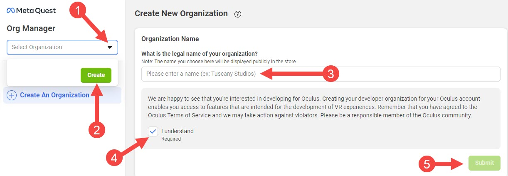
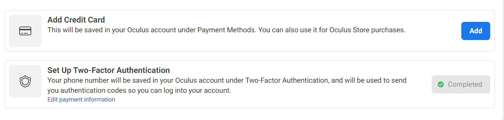
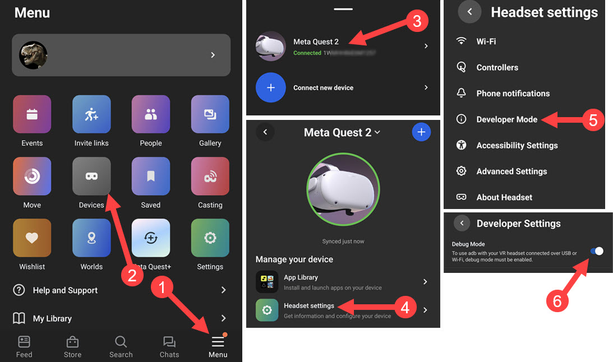

Setup
Enable Developer Mode
To allow installing apps & games to your headset, you must be recognized as a developer. This process is free, quick, and easy.
Step 1: Joining or Creating an Organization
Go to developer.oculus.com/manage/organizations/create/ and fill in the appropriate information.

Step 2: Verify Your Account
Verify your account with a credit/debit card or a phone number at developer.oculus.com/manage/verify/.

Step 3: Enable Developer Mode
In your Meta Quest mobile app, go to Menu -> Devices -> Headset Settings -> Developer Mode and turn on Debug Mode.
